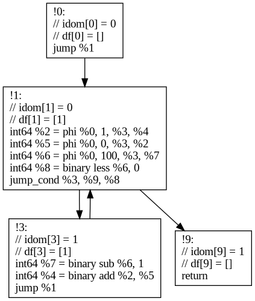
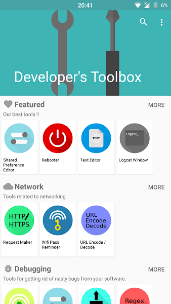

My Projects
on 15.11.2023 by Kuter Dinel.
Some interesting projects I made over the years.
Very simple Compiler for making a tutorial.
Wrote a very simple compiler for writing a tutorial about it. Also made an interactive visualization of recursive descent parsing. The tutorial is here.
HP Omen Led Controller Kernel Module (C)
I reverse engineered HP's control software that was written for Windows and implemented it as a kernel module in Linux.
This kernel module exposes a multi color led device for each of the 4 keyboard zones. Some parts(wmi query function) are taken from hp-wmi driver.
Project Link is here.
MCompiler (C) (In progress)
SSA Based compiler targeting x86_64. Implemented all the data structures from scratch. Implemented dominator tree construction, SSA conversion etc.
Here is an example to its IR:

Programming Language in Turkish Syntax. ~2018
A simple programming language closer to Turkish syntax, meant to be easier to be understood by native Turkish speakers.
(condition) ise {}means if (condition) {}`(condition) iken {}to create a for loop.
Created in few weeks of sleepless coding for a high school competition, was rejected. It's a simple recursive evaluator.
Eventually led me to get into LLVM, which led me to get an internship at Google !
A simple TDYUP program :
fonksiyon ana() {
1 iken {
ham_yazdır("How many fibonacci numbers do you want to print ? (max 30): ")
fib_sayı = sayı(girdi())
fib_sayı > 30 ise {
yazdır("Maximum 30 numbers !!!")
devam
}
a = 1 b = 0 i = 0
(i < fib_sayı) iken {
yazdır(metin(a))
a += b
b = a - b
i += 1
}
}
}
Developer's Toolbox (Java) 2017
This was a toolbox app for the android operating system. Had various kinds of tools, some utilizing the root access on Android devices. XDA Developers wrote an article about it . Reached 10k downloads at some point.
It was mostly being used by people who wanted to cheat in games.

Gravity Platform (Java, LibJDX, Box2D)
Gravity Platform (also know as Gravity.exe) is a platformer game where platform orientation changes perspective and gravity. I worked on this project in 2016-2017. I used custom GLSL Shaders to create the ripple effect when the ball touches a platform.
Magnet Multiplayer (JS, Protobuf)
Multiplayer Browser Game using WebSockets & Protocol Buffers Experimented with code sharing between server and client.
Mesele Social (PHP, MySQL, JS) ~2015-2014
Reddit and EksiSozluk(Very old Turkish social media site) mix (Yes, I watched The Social Network) I also wrote a JS library that is kinda similar to JQuery but it wasn't as browser compatible.
Bear Kill (Horizontal Floppy Bird that shoots flame) (Java, LibGDX) ~2015-2014
My own Minecraft clone (Java, LWJGL, OpenGL3.0) ~2014
Source code sadly lost (broken hard drive). Custom OpenGL render (Very inefficient). I remember that it took me few weeks to find a bug in my renderer, it was a problem with my matrix multiplication function (I was overriding the matrix that I was multiplying with).